Was ein PDF speichertWhat a PDF stores
Ein PDF ist eine Seitenbeschreibung, keine Textdatei. Die Norm ISO 32000 legt fest, wie Glyphen einer Schrift an Koordinaten gesetzt werden; Absätze, Spalten, Tabellen und Lesereihenfolge kennt das Format nicht. Ein Parser muss sie aus den Positionen zurückgewinnen. Wo das Layout ungewöhnlich ist, geht das schief: Die Kapitelüberschrift „Störungen, was tun?“ steht im Handbuch als gestaltete Marke, und der erste Parserlauf las ihre Buchstaben in der Reihenfolge der Objekte: „S t r ö n u , e g w a . ? s“. Symbole aus einer Symbolschrift kommen als die Buchstaben an, die an ihrer Stelle im Zeichensatz stehen; Bilder werden zu <!-- image -->.
A PDF is a page description, not a text file. The ISO 32000 standard defines how glyphs of a font are placed at coordinates; paragraphs, columns, tables and reading order are unknown to the format. A parser has to recover them from the positions. Where the layout is unusual, this goes wrong: the chapter heading “Störungen, was tun?” appears in the manual as a designed mark, and the first parser run read its letters in the order of the objects: “S t r ö n u , e g w a . ? s”. Symbols from a symbol font arrive as the letters that sit at their position in the character set; pictures become <!-- image -->.
- EnthältContainsTextobjekte (Glyphen, Schrift, Position), Bilder, Vektorgrafik, Seiten. Optional eine Tag-Struktur mit Lesereihenfolge; das Handbuch hat keine.Text objects (glyphs, font, position), pictures, vector graphics, pages. Optionally a tag structure with reading order; the manual has none.
- Enthält nichtDoes not containAbsätze, Tabellenzellen, Überschriftenebenen, die Bedeutung eines Symbols.Paragraphs, table cells, heading levels, the meaning of a symbol.
- FolgeConsequenceJede Extraktion ist eine Rekonstruktion mit Fehlern, die gegen das Original geprüft werden muss.Every extraction is a reconstruction with errors that must be checked against the original.
Der Parser: DoclingThe parser: Docling
Das Fallbeispiel nutzt Docling (IBM, MIT-Lizenz; Auer et al. 2024). Docling erkennt mit dem Layoutmodell DocLayNet Textblöcke, Überschriften und Bildbereiche und mit dem Tabellenmodell TableFormer die Zellen einer Tabelle, und exportiert das Ergebnis als Markdown. Die Funktion convert() im Parser des Fallbeispiels hat neun Zeilen: Sie ruft DocumentConverter().convert() auf, exportiert jede Seite einzeln mit export_to_markdown(page_no=…) und schreibt vor jede Seite den Marker <!-- pdf-page: N -->. Alternativen sind PyMuPDF (schnell, ohne Layoutmodell), pypdf (reines Python, ohne Tabellen) und Unstructured (viele Formate); die README des Fallbeispiels nennt Docling 2.129 und PyMuPDF 1.28 als geprüfte Versionen (Stand 19.09.2026).
The case study uses Docling (IBM, MIT licence; Auer et al. 2024). Docling recognises text blocks, headings and picture regions with the layout model DocLayNet and the cells of a table with the table model TableFormer, and exports the result as Markdown. The function convert() in the case study's parser has nine lines: it calls DocumentConverter().convert(), exports every page separately with export_to_markdown(page_no=…) and writes the marker <!-- pdf-page: N --> before every page. Alternatives are PyMuPDF (fast, no layout model), pypdf (pure Python, no tables) and Unstructured (many formats); the case study's README names Docling 2.129 and PyMuPDF 1.28 as tested versions (as of 19 Sept 2026).
from docling.document_converter import DocumentConverter
def convert(pdf_file, output_file):
result = DocumentConverter().convert(str(pdf_file))
pages = [f"<!-- pdf-page: {page} -->\n\n" + result.document.export_to_markdown(page_no=page)
for page in sorted(result.document.pages)]
Path(output_file).write_text("\n\n".join(pages), encoding="utf-8")
Aus parser.py des Fallbeispiels, gekürzt. Die vollständige Datei schreibt zuerst in eine temporäre Datei und benennt sie erst am Ende um, damit ein Abbruch keine halbe Wissensdatei hinterlässt.From the case study's parser.py, shortened. The complete file first writes to a temporary file and only renames it at the end, so that an abort leaves no half-written knowledge file.


Seite 33 im VergleichPage 33 compared
Links die gedruckte Seite 33 mit den Tabellen „Hinweise im Anzeigefeld“ und „Störungen, was tun?“, rechts das Markdown, das Docling daraus erzeugt. Die Tabellen sind vollständig, die Zeile zu E:18 steht mit beiden Ursachen und beiden Querverweisen da. Fünf Stellen sind markiert: der Seitenmarker, drei Symbole der Symbolschrift, die als Buchstaben ankommen, und ein Querverweis. Klicken Sie sie an. Left the printed page 33 with the tables “Hinweise im Anzeigefeld” and “Störungen, was tun?”, right the Markdown Docling produces from it. The tables are complete, the row for E:18 is there with both causes and both cross references. Five spots are highlighted: the page marker, three symbols of the symbol font that arrive as letters, and a cross reference. Click them.
Die aktive Wissensdatei stammt vom alten Parserlauf.The active knowledge file comes from the old parser run. Sie enthält 187 Abschnitte, 12 218 Wörter und keine Seitenmarker. Der überarbeitete Parser mit Markern wurde an Seite 33 geprüft; das Fallbeispiel hat die aktive Datei nicht ersetzt, weil eine vollständige neue Extraktion erst gegen alle Tabellen, Symbole und Warnungen geprüft werden muss. Deshalb nennen die Antworten heute Querverweise statt Fundseiten.It contains 187 sections, 12,218 words and no page markers. The revised parser with markers was checked on page 33; the case study did not replace the active file because a complete new extraction must first be checked against all tables, symbols and warnings. That is why answers today name cross references instead of pages found.
Provenienz: woher eine Antwort ihre Seite hatProvenance: where an answer gets its page from
Die Funktion prepare_nodes() in rag_engine.py zerlegt das Markdown an den Seitenmarkern und schreibt die Nummer als pdf_page in die Metadaten jedes Chunks. format_source_reference() baut daraus die Quellenangabe: den Abschnittstitel des besten Chunks, dann die Fundseiten aus pdf_page, und nur wenn es keine gibt, die Querverweise „~ Seite NN“ aus dem Text, ausdrücklich als Querverweise bezeichnet. Der Prüfbericht des Fallbeispiels hält fest, warum diese Trennung nötig war: Querverweise erschienen zuvor wie Fundseiten.
The function prepare_nodes() in rag_engine.py splits the Markdown at the page markers and writes the number as pdf_page into every chunk's metadata. format_source_reference() builds the source reference from it: the section title of the best chunk, then the pages found from pdf_page, and only if there are none, the cross references “~ Seite NN” from the text, explicitly labelled as cross references. The case study's audit report records why this separation was needed: cross references previously looked like pages found.
file_nameDie Quelldatei; wichtig, sobald mehr als ein Dokument im Index liegt.The source file; important as soon as more than one document is in the index.pdf_pageDie physische Seite aus dem Marker. Fehlt in der aktiven Datei des Fallbeispiels.The physical page from the marker. Missing in the case study's active file.sectionDie Markdown-Überschrift, unter der der Chunk steht.The Markdown heading under which the chunk sits.context_groupDie kuratierte Verfahrensgruppe (Pumpenreinigung, Notentriegelung, erster Waschgang, Transport), Lab 04.The curated procedure group (pump cleaning, emergency release, first wash, transport), lab 04.
Prüfen vor ErsetzenCheck before replacing
Die README des Fallbeispiels schreibt die Reihenfolge vor: neue Extraktion in eine neue Datei (siemens_wissen_neu.md), Vergleich mit dem PDF an Tabellen und Warnhinweisen, erst dann die aktive Datei ersetzen. Der Grund ist der Fingerprint (Lab 09): Ändert sich der Inhalt der Wissensdatei, wird der gesamte Index neu gebaut, und jede Antwort stützt sich danach auf die neue Extraktion. Ein Fehler in der Extraktion wird so zum Fehler in jeder Antwort. Die vier kuratierten Verfahrensgruppen in manual_context.py sind die Antwort des Fallbeispiels auf die Artefakte, die sich nicht wegparsen ließen: Sie binden die Warnhinweise zur Pumpenreinigung und zur Notentriegelung wieder an ihre Arbeitsschritte.
The case study's README prescribes the order: new extraction into a new file (siemens_wissen_neu.md), comparison with the PDF on tables and warnings, only then replace the active file. The reason is the fingerprint (lab 09): if the content of the knowledge file changes, the whole index is rebuilt, and every answer afterwards relies on the new extraction. An error in the extraction thus becomes an error in every answer. The four curated procedure groups in manual_context.py are the case study's answer to the artefacts that could not be parsed away: they bind the warnings for pump cleaning and emergency release back to their work steps.
Übertragung auf ein eigenes DokumentTransfer to a document of your own
Vor dem Indexieren eines eigenen PDFs: eine Seite mit Tabelle, eine mit Warnhinweis und eine mit Symbolen extrahieren und neben das Original legen. Was dort verloren geht, geht überall verloren. Lab 10 macht daraus eine Checkliste.Before indexing a PDF of your own: extract one page with a table, one with a warning and one with symbols and put them next to the original. What is lost there is lost everywhere. Lab 10 turns this into a checklist.
ÜbungenExercises
Fünf Übungen: die Seite lesen, die Ursache der Verluste benennen, die Aufbereitung ordnen, den Parser aufrufen und die Quellenangabe deuten.Five exercises: read the page, name the cause of the losses, order the preparation, call the parser and interpret the source reference.
ZusammenfassungSummary
- Ein PDF speichert Glyphen mit Koordinaten; Struktur muss ein Parser rekonstruieren, und dabei entstehen Artefakte.A PDF stores glyphs with coordinates; structure has to be reconstructed by a parser, and artefacts arise in the process.
- Docling liefert Markdown mit Tabellen und, mit dem Parser des Fallbeispiels, Seitenmarker je Seite.Docling delivers Markdown with tables and, with the case study's parser, page markers per page.
- Symbole einer Symbolschrift werden zu Buchstaben, Bilder zu Kommentaren, ungewöhnliche Überschriften zu Buchstabensalat.Symbols of a symbol font become letters, pictures become comments, unusual headings become scrambled letters.
- Provenienz sind Metadaten: Datei, Seite, Abschnitt, Gruppe. Die Quellenangabe entsteht daraus, nicht aus dem Modell.Provenance is metadata: file, page, section, group. The source reference arises from it, not from the model.
- Erst prüfen, dann ersetzen: Ein Fehler in der Extraktion wird zum Fehler in jeder Antwort.Check first, replace afterwards: an error in the extraction becomes an error in every answer.
QuellenSources
- Auer, C. et al. (2024): Docling Technical Report. IBM Research. arXiv:2408.09869; Dokumentation docling-project.github.io/docling, abgerufen 19.09.2026
- ISO 32000-2:2020: Document management – Portable document format – Part 2: PDF 2.0. iso.org
- PyMuPDF-Dokumentation: pymupdf.readthedocs.io; pypdf: pypdf.readthedocs.io; Unstructured: docs.unstructured.io, abgerufen 19.09.2026
- Fallbeispiel:
parser.py,rag_engine.py(prepare_nodes, format_source_reference),manual_context.py,docs/AUDIT.md(„Querverweise erschienen wie Fundseiten“), README (Abschnitt zur PDF-Neuverarbeitung), Stand 19.09.2026. Seite 33 alsassets/seite-33.png(PyMuPDF, 150 dpi) unddata/seite-33.md(Docling 2.129, page_range 33).Case study:parser.py,rag_engine.py(prepare_nodes, format_source_reference),manual_context.py,docs/AUDIT.md(“cross references looked like pages found”), README (section on PDF re-processing), as of 19 Sept 2026. Page 33 asassets/seite-33.png(PyMuPDF, 150 dpi) anddata/seite-33.md(Docling 2.129, page_range 33).